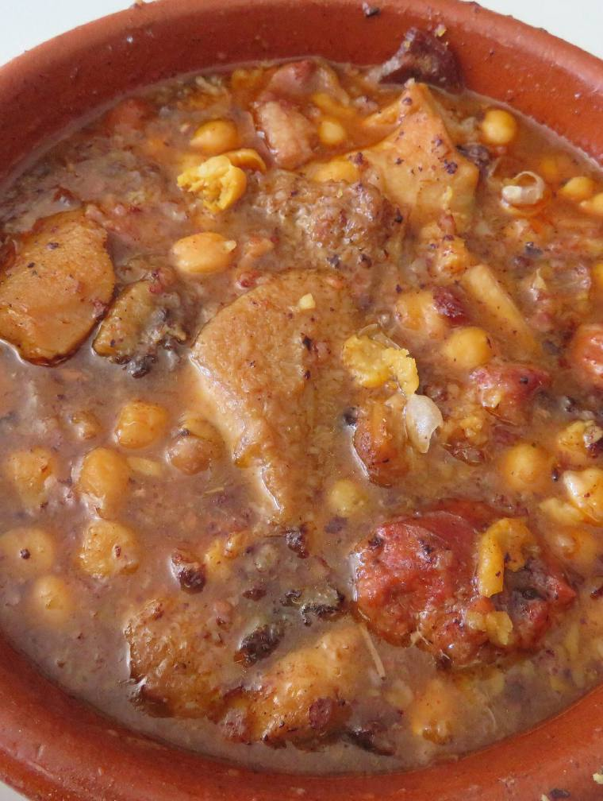

Cuisine espagnole

Cuisine espagnole
Callos a la andaluza
Tripes à l’andalouse, ou menudo
Préparation : 45 min
Repos : 12 h
Cuisson : 3 h 30
Ingrédients (pour 6 personnes)
- 3 kg de tripes de veau nettoyées
- 1 pied de veau en morceaux
- 400 g de pois chiches secs
- 200 g de chorizo en rondelles
- 100 g de lard de jambon ibérique
- 3 tomates pelées
- 3 poivrons verts
- 2 oignons
- 1 tête d’ail
- 5 brins de menthe verte (hierbabuena)
- 1½ cuillère à café de paprika doux de la Vera
- 1 cuillère à soupe de manteca colorá (saindoux au paprika)
- 70 ml d’huile d’olive
- 10 clous de girofle
- 10 grains de poivre
- 1 piment sec
- sel
Quantités adaptées. Les temps de cuisson ne sont pas recalculés.
- La veille, faire tremper les pois chiches.
- Couvrir le pied de veau d’eau, porter à ébullition, laisser frémir 35 minutes.
- Ajouter les tripes bien lavées, reprendre l’ébullition, baisser le feu.
- Ajouter un peu d’eau, oignons piqués de girofle, tomates, poivrons, ail, menthe, épices, gras, lard et chorizo. Mijoter 2 h 30 à 3 heures, jusqu’à tendreté, sans laisser attacher.
- Cuire les pois chiches à part dans un peu de bouillon et d’eau, puis les réunir au ragoût.
- Retirer oignons, poivrons, ail, menthe et grains. Saler, laisser reposer, dégraisser.
D’après le menudo gitano de Manuel Valencia, chef à Jerez, Real Academia de Gastronomía. Traduit et reformulé, durée de mijotage précisée.